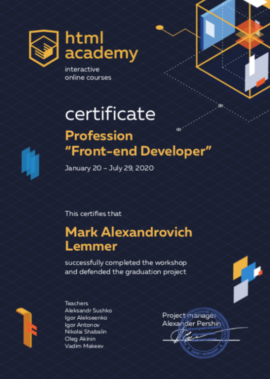

Мои сертификаты
-
Professional HTML & CSS, level 1

На данном курсе я научился:
- Семантичной и доступной вёрстке
- Синтаксису html, тонкостям тегов и атрибутов
- Работать со спецификацией тегов (правилам вкладывания тегов)
- Сложным случаям разметки
- Figma, анализу макета (выделению уникальных и повторяющихся блоков
- Выстраивать базовую структуру, использовать классы для именования блоков
- Экспортировать графику из макета
- Снимать с макета параметры блоков и текста
- Разбираться в форматах графики, выбирать правильный формат, экспортировать и оптимизировать изображения
- Создавать файловую структуру проекта, использовать относительные пути к ресурсам
- Выполнять базовую стилизацию
- Основам CSS, разобрался, что такое наследование, каскад и специфичность
- Внедрять контентную и декоративную графику
- Подключать шрифты
- Строить крупные сетки страниц с помощью Flexbox и Grid
- Боксовой модели и типам боксов
- Анализировать сетки на макетах и определять крупные сетки
- Создавать мелкие сетки компонентов при помощи флексов
- Создавать мелкие сетки компонентов при помощи гридов
- Разбираться в типовых ситуациях, когда гриды подходят лучше флексов
- Совместному использованию гридов и флексов, рассмотрел преимущества и недостатки каждой технологии
- Добавлять мелкие декоративные и иконочные графические элементы, стилизации текстовых блоков, декоративных элементов, компонентов, кнопок, ссылок
- Стилизовать блоки при помощи двумерных трансформаций, рамок, теней и градиентов
- Точечному позиционированию элементов, псевдоэлементам
- Тонкостям типографики и визуальным правилам оформления контента
- Стилизовать интерактивные состояния ссылок и кнопок
- Верстать всплывающие элементы. Стилизовать формы и их элементы
- Оформлять нестандартные элементы форм
- Выстраивать модальные окна и выпадающие элементы
- Стилизовать интерактивные состояния компонентов форм и слайдеров
- Проверять проект на соответствие критериям качества
- Тестировать контент на изменение количества и размеров элементов, текста и графики
- Проверять проект на соответствие макету и стайлгайду
-
Professional HTML & CSS, level 1

На данном курсе я научился:
- Проходил курс повторно (для лучшего закрепления материала)
-
Professional HTML & CSS, level 2
На данном курсе я научился:
- Подходам к вёрстке
- Методологии БЭМ
- Препроцессорам Sass, Less
- Переменным и математике, вложенным селекторам, операциям с цветами
- Подключению файлов, примесям и расширениям, организации кода, сборке стилей
- Сборщику Gulp
- Адаптивным сеткам
- Гридам для адаптивных макетов
- Применять адаптивные декоративные элементы
- Отличать резиновую верстку от фиксированной
- Адаптивно-резиновой вёрстке
- Адаптивной и резиновой графике
- Ретинизации (графика для экранов повышенной чёткости)
- Векторной графике и оптимизации
- Использованию SVG, SVG-спрайтов
- Стилизации SVG
-
Profession “Front-end Developer”

На данном курсе я научился:
- Навыки из курса Professional HTML & CSS, level 1
- Навыки из курса Professional HTML & CSS, level 2
- Навыки из курса JavaScript. Professional Development of Web Interfaces
-
JavaScript. Professional Development of Web Interfaces
На данном курсе я научился:
-
JavaScript. Architecture of Front-end Applications

На данном курсе я научился:
-
PUG. Template Engine
На данном курсе я научился: